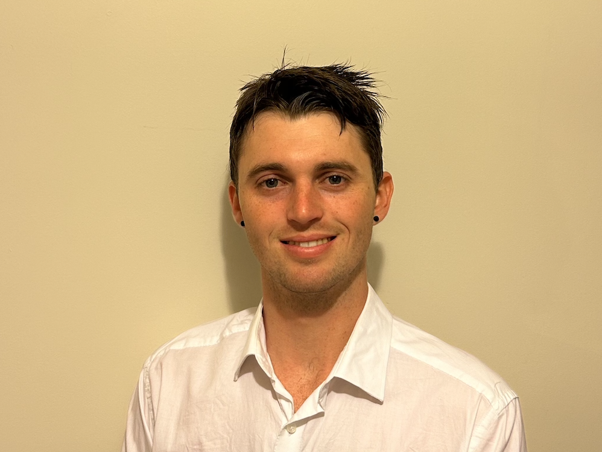
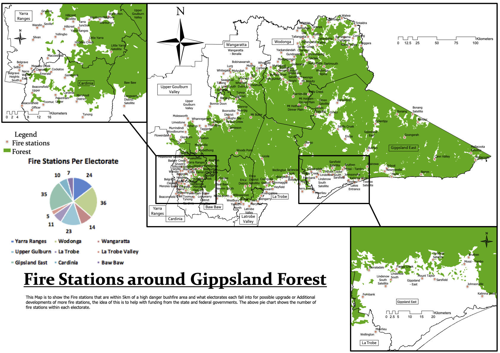
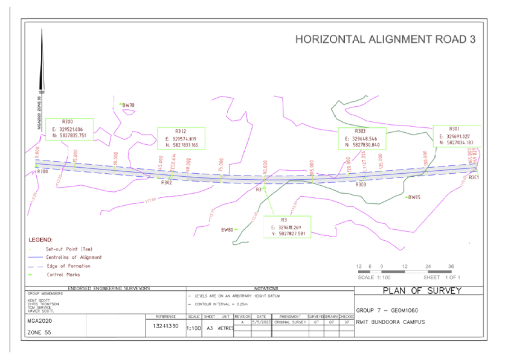
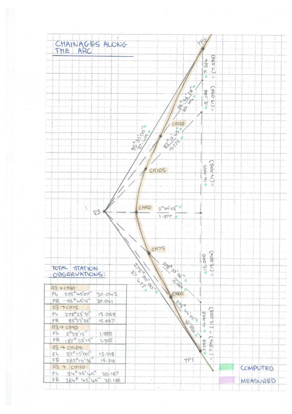
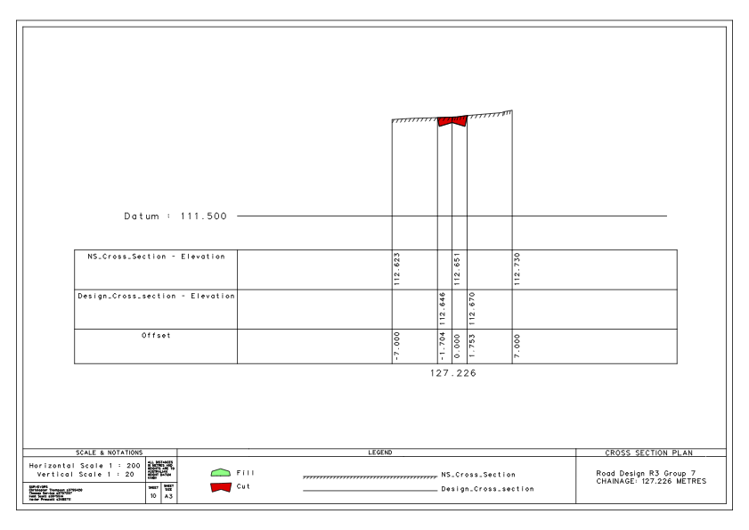

Survey Portfolio
Thomas Service
About
This website is the geoportfolio of Thomas Service which was made for the subject Professional Practice (GEOM2116). The website entails
information that is academically and profesionally related to the field of geospatial science
Currently, a full-time student studying the Bachelor of Surveying (Honours) completing my final year. Experienced in both office and field procedures as a Cadastral Land Surveyor in Melbourne, Victoria. Competent in completing a variety of tasks including historic title searches, computing basic to intermediate level title computations and applying checks to ensure quality, drafting survey plans, and operating and performing basic maintenance and calibration on equipment.
My own personal hobbies include Coaching Football and travelling! More detailed information can be found in the About page!

Academic Portfolio Overview
Cartography
Cartography encompasses the art and science of crafting maps by utilizing spatial data derived from various sources, including publicly available government data and population statistics from authoritative entities like the Australian Bureau of Statistics (ABS). In the context of the Cartography 2 course, the practical assignments revolved around the creation of maps. While there were two tests and an initial practical exercise, the central focus of Cartography 2 involved students designing and producing three distinct maps of their choosing, each centered around a specific thematic topic. These practical assignments allowed students to apply their cartographic skills and knowledge to real-world scenarios, enabling them to effectively communicate information through map visualization.
The final map assignment represents the culmination of the Cartography 2 course, requiring you to create a map layout, either in A4 or A3 size, tailored for a specific audience and map use of your choosing, with complete freedom to select any topic for the map's content. The completed map layout must be submitted in PDF format. In addition to this, you will participate in an oral viva where you will articulate your design rationale. This entails identifying the intended map user, specifying the supported map uses, justifying your data selection based on their relevance to the map's intended purpose and users, and explaining your cartographic design decisions, all in accordance with the principles of cartographic design theory covered in the course lectures. This assignment serves as an assessment of your capacity to effectively apply cartographic design concepts and articulate your design choices.
Below is the final map that I have created as part of my course:
Note: If map display is too small, right-click the image and 'Open in new tab' to allow zooming of the map.
Melbourne Map: All 7-11 locations in Melbourne City

Engineering Surveying
This course aims to cultivate an elevated understanding of engineering surveying, offering insights into modern and evolving methodologies and technologies, along with adherence to prevailing industry benchmarks.
The users of this will be:
- Surveying
- Civil Engineers
For the 2023 version of the coure, we had to complete as a group a design component of a road design. This was created by using a DTM model and creating an alignment.
Within this we had to create cross sections to work out the cut and fill for the construction to take place.
The Deliverable for this assignment was:
- Horizontal Alignment Plan
- Field Cards with Computations
- Cross section Plan
The Survey information was obtained from RMIT, this was then processed through LISCAD.see and able to give a DTM model. Through LISCAD.see and LISCAD.CAD
the alignments and cross sections were able to be created. once this was generated a field day at RMIT Bundoora was used to compute the radiations and then
stake these points out in the correct position. Once the marks were setout a Level Run was completed to determine the cut and fall of the alignment.
Note: If map display is too small, right-click the image and 'Open in new tab' to allow zooming of the map.
Topographic survey map and Alignment

Field card of computations

Final Cross sections

Industry Experience
This page will briefly cover all my work experience (as of September 2023) within the geospatial science industry. The company I have
worked in was Adept Surveys PTY Ltd, in this page I will discuss what I have learnt and types of projects that I have worked on.
Adept Surveys PTY Ltd
Land Surveyor
Febuary 2019 - September 2023
My experience at Adept Surveys was in the position of an Undergraduate Surveyor. This role started off as an assistant surveyor. It taught me the fundamentles
of surveying. The experience that I had were invaluable to my learnings. These included such things as basic to moderate level title computations, level and feature
surveys in unique places. These places were such as the new gate installation at the Supreme Court House Melbourne. This also took me into the rural areas for large scale
farm surveys. Adept Surveys was a small firm, which taught me how to interact with everyone and experience all the different sections that create a successful business.
As part of the team at Adept, the completion of work to a high standard and to the clients needs were important. This was Highlighted by the changing of the
quote for every job. Part of my role was to interperate this and locate all the required detail. This was highlighted in the end result of the plan. I dealt with some
clients in the way that the plan should be presented, and whether or not any alterations had occured that needed amending on the plan.
Skills and Proficiencies
 |
OHS |
|
Liscad and Autocad |
|
Attention to Detail |
 |
Laser Scanning |
|
Drafting Skills |
 |
Problem Solving |
Credits and Attributions
The following programming languages and software were used to create the website
- HTML
- CSS
- JavaScript
- Visual Studio Basic
The deliverables contains content from the following subjects:
- Cartography 2 (GEOM2079)
- Engineering and Construction Surveying (GEOM1060)
Special thanks to the following people who have helped me make this website with their expertise and guidance:
Attributions of icons used: